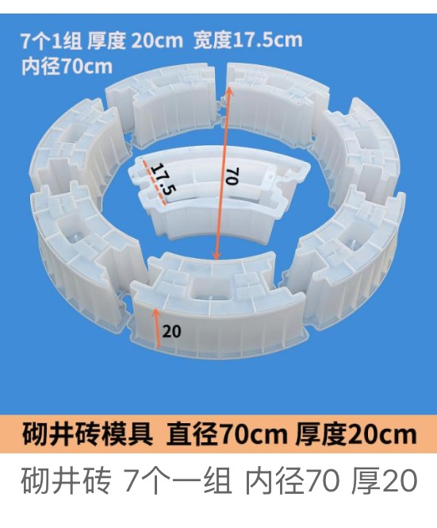
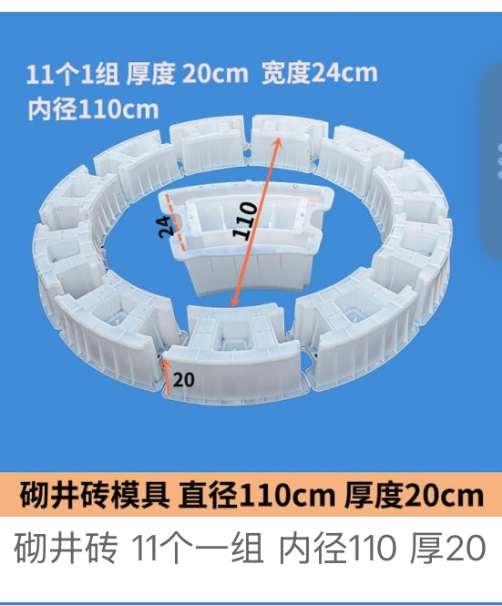
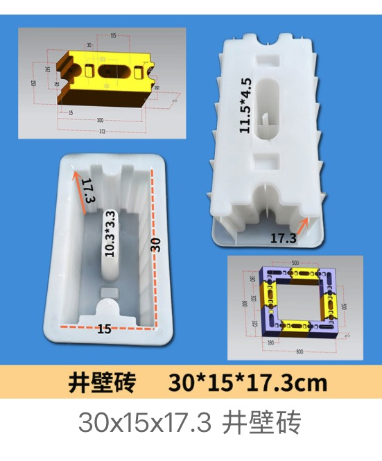
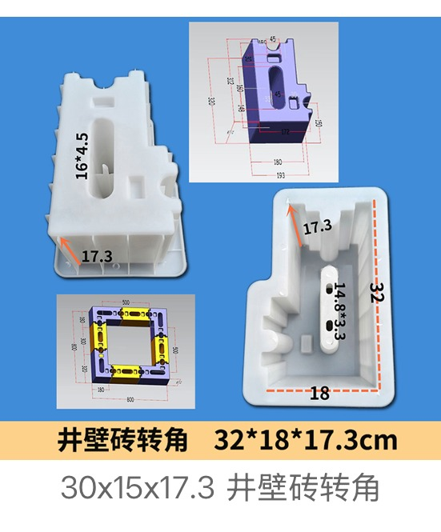

Manhole Cover, Shaft Brick & Well Wall Brick Moulds
Municipal and utility mould category covering square and rectangular manhole cover moulds, round sewer cover moulds, well frame moulds, curved shaft ring brick moulds for Ø 70–150 cm chambers, and straight or corner well wall brick moulds for drainage, sewer, road and utility access projects.
Covers & Frames

Square Manhole Cover Mould 50 × 50 × 6 cm
Square well cover · 50 × 50 × 6 cm finished slab
View Details
Rectangular Manhole Cover Mould 60 × 40 × 6 cm
Rectangular well cover · 60 × 40 × 6 cm finished slab
View Details
Square Manhole Cover Mould with Slotted Frame
Two-part set · slotted cover plate + matching frame
View Details
Round 5-Hole Sewer Cover Mould Ø80 × 5.5 cm
Round sewer cover · Ø 80 cm × 5.5 cm · 5 drainage holes (Ø22×4 + Ø20×3)
View Details
Round Well Frame Mould Ø68 × 10 cm
Circular well frame / collar · Ø 68 cm outer × 10 cm high · Ø 61 cm clear opening
View DetailsShaft Ring & Well Wall Bricks

Shaft Ring Brick Mould · ID 70 cm · 7 pcs/ring
Curved shaft brick · 7 pieces per ring · inner Ø 70 cm · width 17.5 cm · height 20 cm
View Details
Shaft Ring Brick Mould · ID 110 cm · 11 pcs/ring
Curved shaft brick · 11 pieces per ring · inner Ø 110 cm · width 24 cm · height 20 cm
View Details
Well Wall Brick Mould 30 × 15 × 17.3 cm
Straight well wall brick · 30 × 15 × 17.3 cm · tongue 11.5 × 4.5 / groove 10.3 × 3.3 cm
View Details
Well Wall Corner Brick Mould 32 × 18 × 17.3 cm
Corner well wall brick · 32 × 18 × 17.3 cm · matches 30 × 15 × 17.3 cm straight brick
View Details